Make-up
Make-up is heel moeilijk in het begin. Wat gaat nu eerst peder oof foundation? Hoe blend je je oogschaduq seemless in je crease? Allerlei vragen met antwoorden die je simpelweg gewoon moet weten. Ik geef hier een standaard stappenplan voor je make-up. Als je dit aanhoudt kan het (bijna) niet fout gaan.
1. Primer - Dit is belangrijk zodat alle andere make-up een goede laaghebben om op te bouwen. Zelf hou ik van de Benifit Porefessional(€57,13), Mario badescu Rose Water (€11,00) en Mac Fix+(€17,50).
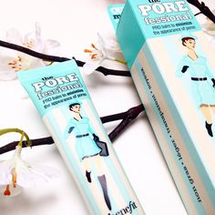 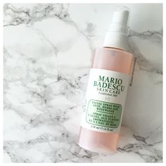 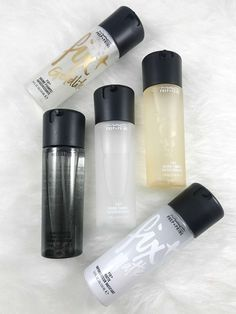2. Foundation - De naam zegt het al het is de foundation van je hele make-up. Je kunt gaan voor verschillende soorten foundation. Mijn persoonlijke favoriet is Huda Beauty Faux Fliter(€39,95).
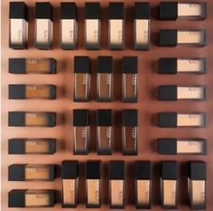3. Concealer - Dit gebruik je om je wallen en opvallende plekjes weg te werken. Mijn favoriet is de Maybelline Instant Age Rewind (€7,79).
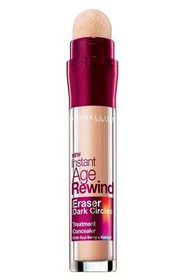4. Poeder - Dit gebruik je zodat je make-up op zijn plek blijft zitten en niet in je lijntjes gaat zitten, maar LET OP! Als je teveel poedert kun je eruit gaan zien als een barbie pop. Mijn favoriete poeder is Laura mercier lose setting powder (€42,00).
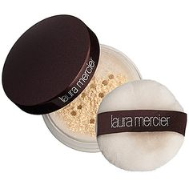5. Wenkbrouwen - Dit is een zone waar je veel over kunt debateren. De eeuwige vraag is poeder, potlood of gel. Naar mijn mening ziet potlood er hetbeste uit. Hierbij zijn mijn favorieten NYX Micro Pencil (€10,50) en Anastasia Beverly Hills Browwiz (€28,50). Hierna kun je eventueel alles op zijn plek zetten met een eybrowgel.
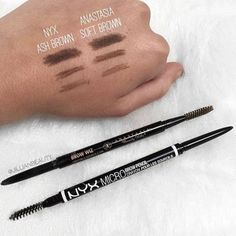6. Oogschaduw - Hier kun je helemaal los gaan van roze tot bruin tot blauw. Ik heb persoonlijk een wat warmere huid en vind dan warme oogschaduwpalleten ook het mooist op mijn gezicht. Mijn favorieten zijn Huda Beauty Topaz Obsession (€28,00), Revelution Rose Gold Pallete (€10,00) en Anastasia Beverly Hills Soft Glam (€49,95).
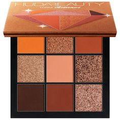 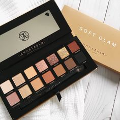
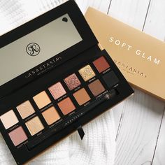
7. Highliter - Dit is een hit or miss. Highliter moet niet te donker zijn maar ook niet te ligt (been there dan lijk je op tinman). Highliter gebruik je op je jukbenderen en alle andere plekjes die je naar voren wilt laten komen. Daarom ga ik vaak voor een wat goudere highliter. Mijn favoriet is Revolution Golden Lights Higliter (€3,79).

8. Bronzer - Oke dus luister goed je hebt twee verschillende bronzers voor twee verschillende dingen. Je warme bronzer gebruik je om je gezicht op te warmen en om er bruiner uit te zien. Je wat meer grijze bronzer gebruik je om te contouren. Zelf ben ik extreem slecht in beiden dus heb ook geen favoriet product.
9. Lippen - Dit is ook een eigenkeuze, maar ik vind alles leuk. Iedere lipkleur is unique en kan een mooduitstralen. Momenteel draag ik vaak een nude lipgloss en dan is Fenty Beauty Lip Bom echt perfect.
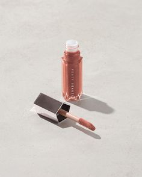10. Fixingspray - Zelf find ik het fijn om alles op zijn plek te zetten met fixingspray. Hierbij gebruik ik dezelfe als die ik als primers gebruikte namelijk Mario Badescu Rose Water (€11,00) en Mac Fix+ (€17,50).